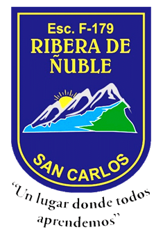

◇ MENTAT ACADEMY
ORDEN DEL PENSAMIENTO · ARCHIVO IMPERIAL

Has sido convocado a la Academia. Los archivos imperiales están comprometidos y solo una mente entrenada podrá distinguir la verdad del engaño.

En un imperio construido sobre información y estrategia, ha desaparecido un registro secreto. Los rumores amenazan con condenar a inocentes.
El Maestro Arel te enseñará a separar los hechos de las hipótesis, detectar contradicciones y justificar tus decisiones. No necesitas acertar siempre: necesitas aprender a pensar mejor.
Cuatro rutas de entrenamiento, de 5.º a 8.º básico.